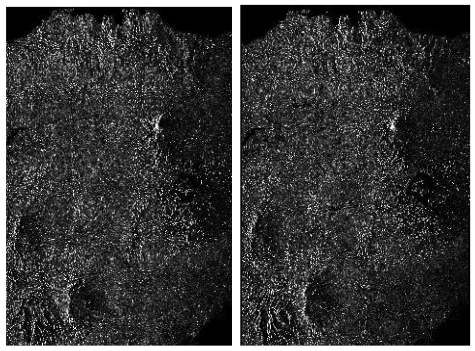
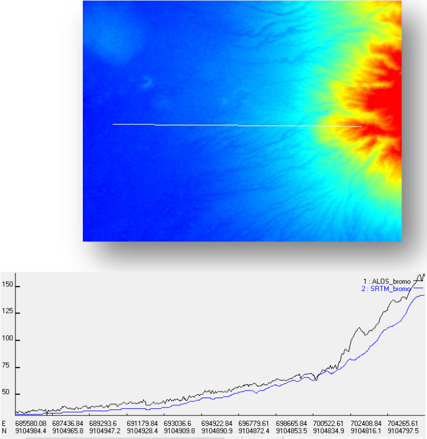

Noorlaila Hayati, Akbar Kurniawan, Muhammad Taufik DOI
Introduction
DEM is digital data showing geometric earth’s surface from coordinate high points represented by regular grid or pixel raster and triangular irregular network (TIN). DEM can be made by using terrestrial survey such as laser scanning, total station, global position system (GPS), radar ground measurement and remote sensing such as photogrammetric, interferometry, radargrametry.
Generally, technology remote sensing is more popular to generate DEM because the production is more efficient than using ground survey. Radar interferometry is one of the advance techniques to produce DEM. The principle of DEM generation is how to get height values using interferometric phase information from two SLC images which have different time and orbit position (Sarmap, 2009). The advantages using radar interferometry to generate DEM are: the objects on the earth’s surface are not distracted by cloud cover; and acquisition can still be used in night mode.
Data and Methods
Two SAR imageries from ALOS PALSAR level 1.0 (Figure 1.) has been used in this research. Two acquisition times to derive DEM were on 2010.10.10 and 2010.11.25 date. The method that we used was two-pass interferometry. Generally, four main steps of DEM generation are data focusing, interferometric processing, phase unwrapped and phase to height conversion.
- The first time of processing is focusing raw SAR data included of amplitude and phase information to single look complex (SLC) data. Focusing has a purpose to combine the signal energy spread by duration of linear frequency modulation transmitted pulse called range and the length of the period illuminated by synthetic aperture called azimuth to be a single pixel. The detailed step of focusing is: Doppler centroid estimation, range compression, range migration, autofocus, DC ambiguity estimation and azimuth compression. Having two SLC, the next process were multi-looking processing to determine approximation of square pixel considering ground range resolution and space pixel on azimuth and co-registration processing needed to transform the slave image to the same as position pixel on master image
- Secondly, interferogram generation with 85.112 m normal baseline value has been created and 90 m DEM SRTM was used on this two-pass interferometry. The ratio of azimuth and range looks was 4:1. Because the interferogram still had topographic error, adaptive filter with boxcar type and coherence also need to be performed. Furthermore, we did phase unwrapping and correction parameter orbit using ground control point (GCP) distributed on all of scene to avoid fringe topography. This step include of refinement and flattening.
- Finally, the last process was a conversion from phase to height and geo-coding. The projection map used to geo-code DEM result was Universal Time Mercator (UTM) on 49S zone and WGS84 for the ellipsoid reference.
Result
InSAR DEM is promising DEM generation which has more detail terrain and better spatial resolution. However, this research still need to be continue on verification with ground survey measurement which has more accurate elevation height on earth’s surface.
Comparing to SRTM, InSAR DEM has significant difference elevation with the average residual is 5.85 and maximum gap 25.94 m but the terrain produced by two DEMs presents similar pattern.
The right selection of pair SAR images is important to avoid noise and error on SAR processing particularly related to temporal and long baseline. DEM generation is better using longer normal baseline due to effect base height ratio (Yu, 2010) and reduce effect atmospheric error (Hanssen, 2001).